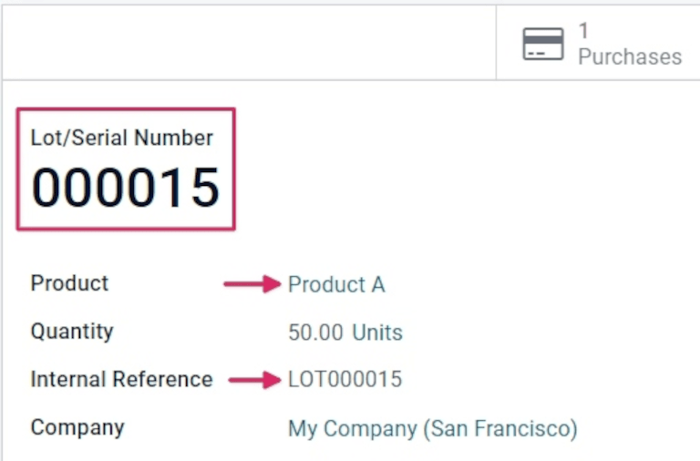
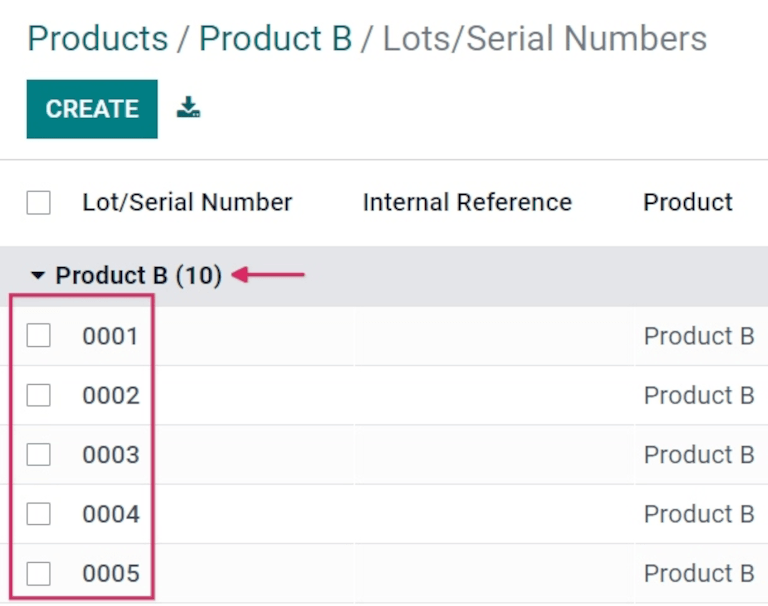
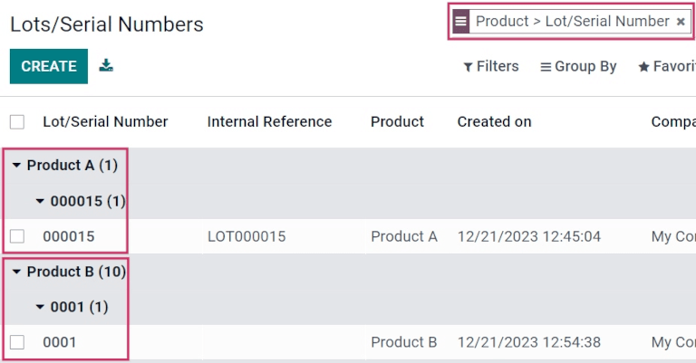

Difference between lots and serial numbers¶
Lots and serial numbers are the two ways to identify and track products in Odoo. While there are similarities between the two traceability methods, there are also notable differences that affect receipts, deliveries, and inventory reports.
A lot usually indicates a specific batch of an item that was received, is currently stored, or was shipped from a warehouse. However, it can also pertain to a batch of products manufactured in-house, as well.
A serial number is a unique identifier assigned incrementally (or sequentially) to an item or product, used to distinguish it from other items or products.
Enable lots & serial numbers¶
To track products using lots and serial numbers, the Lots & Serial Numbers feature must be enabled.
To do that, go to the , scroll down to the Traceability section, and click the box next to Lots & Serial Numbers. Then, click the Save button to save changes.

When to use lots¶
Lots are useful for products that are manufactured or received in large quantities, such as clothes or food. Lots and can be used to trace a product back to a group, which is especially useful when managing product recalls or expiration dates.
Example
Manufacturers assign lot numbers to groups of products that have common properties; this can lead to multiple goods sharing the same lot number. This helps identify a number of products in a single group, and allows for end-to-end traceability of these products through each step in their life cycles.
When to use serial numbers¶
The goal of assigning serial numbers to individual products is to make sure every item’s history is identifiable when it travels through the supply chain. This can be especially useful for manufacturers that provide after-sales services related to products they sell and deliver.
Example
Serial numbers can contain many different types of characters: numbers, letters, typographical symbols, or a mixture of all three types.
Traceability¶
Manufacturers and companies can refer to traceability reports to see the entire life cycle of a product. These reports include vital information, like where it came from (and when), where it was stored, and to whom it was sent.
To see the full traceability of a product, or group products by lots and/or serial numbers, go to . Doing so reveals the Lots/Serial Numbers dashboard.
From here, products with lots or serial numbers assigned to them are listed by default. They can also be expanded to show what lots or serial numbers have been specifically assigned to them.
To group by lots or serial numbers, first remove any default filters from the search bar in the upper-right corner. Then, click Group By, and select Add Custom Group, which reveals a mini drop-down menu. From this mini drop-down menu, select Lot/Serial Number, and click Apply.
Doing so reveals all existing lots and serial numbers, and each can be expanded to show all product quantities with that assigned number. For unique serial numbers that are not reused, there should only be one product per serial number.
Tip
For additional information regarding an individual lot number or serial number, click the line item for the lot or serial number to reveal that specific number’s Lot or Serial Number form. From this form, click the Location and Traceability smart buttons to see all stock on-hand using that serial number. Any operations made using that lot or serial number can be found here, as well.